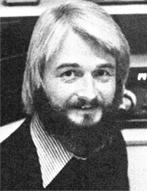

Copthorne Macdonald is the inventor of slow-scan television . . . a method of amateur radio transmission that allows ham operators to both hear and see each other during shortwave broadcasts.
Remember that old saying: "Time flies when you're having fun"? Maybe it's that ... or maybe it's the time speedup phenomenon that accompanies getting older. In any case, it recently struck me that New Directions Radio began five whole years ago.. . 30 MOTHERs into the past!
Those of you who were reading MOTHER back then may recall the two factors that gave birth to this column. The first was a profound disenchantment-on my part, and on the part of many other hams -with "mainstream ham radio", and the typical hello-goodbye, trivia-filled on-the-air "contact" or "QSO"that goes (or used to go) with it. The second factor was my (and other folks') realization that ham radio could be an exceedingly powerful tool for back-tothe-landers. Amateur radio can (among other things) help relieve "cabin fever", provide fast two-way communication in times of emergency, and act as a day-to-day conduit for the exchange of useful information.
So thanks, in part, to the contacts we've been able to make through MOTHER, a number of us who shared this particular understanding of ham radio's usefulness got together on the air, and graduallyover a period of years-a "new directions" network took shape and grew. During this same period, of course, the rest of the world hasn't exactly stood still either: In fact, mainstream society's attitudes and outlooks have begun to change dramatically . . . in our direction.
Last year, for instance, MOTHER reported the results of a Harris survey which showed that for a majority of Americans, increased material gains were no longer a top priority in life. The Stanford Research Institute recently reported to businessmen on a growing trend toward "voluntary simplicity" in daily living. Even politicians are beginning to see and admit the energy realities that only a few ecologists, wholesystem analysts, and MOTHER types saw ti-ma years ago. The point 1' m leading up to is that mainstream amateur radio is a more "aware" place to hang out now than it used to be . . . and if you go about it the right way, it's possible to have some very meaningful, very interesting conversations these days with hams who may not be familiar with MOTHER-or New Directions Radio-at all.
Trivia is still "in", of course, as a topic of conversation . . . and breaking through such "time of day" exchanges still requires some extra effort. George Land has pointed out that before two individuals can explore their differences in a constructive way, they must first explore together some of the things they have in common. Thus, the usual ham practice of discussing equipment and the weather can be looked at as a natural and perhaps necessary "introductory ritual". The technical side of ham radio is something that all hams have in common, and each of us can relate to the other person's weather . . . these subjects are obviously safe conversation openers.
All too often, however, the conversation closes immediately after the opener. The other fellow heads off to chase another "contact". Fortunately, though, there are ways to get around this problem: Joe Reed, WB9JXU (Rt. 1, Box 24, Mountain, Wisconsin 54149)-for instance-has discovered the secret of how to go beyond the introductory ritual and turn a QSO into a real conversation.
"The key," says Joe, "is to ask questions. Ask the guy who he is. What he does. Where his head is at. People love to talk about themselves . . . and will do so at length when you ask the right questions. And whenever you hit on an interesting topic, follow up on it. Be active in your questions, and-when you can-add to the conversation. I'm not saying that you're going to enjoy talking to everybody ... you probably won't. But as soon as you hook up with a person who seems to be into something interesting, you have to follow up."
Joe is a QRP (low power) operator, which (for him) makes the pursuit of "real" conversations all the more challenging. Reed, however, has learned to make the best of the situation: "As soon as the other person learns that you are QRP," explains Joe, "his curiosity about this strange mode that you're using is usually pretty intense . . . so even the shy operator has an initial opening to start a conversation.
"While my question-asking technique applies to both code and voice, I generally prefer code because interference is less of a factor with this mode and you spend less time repeating yourself." Joe adds: "We radio operators are sure a diverse group. I'm a graduate student in geography, although I work in finance. I've had fantastic conversations with farmers, professors, engineers, housewives, you name it. The crucial factor in getting beyond the "trivia" stage in each case-I've found-is wanting to talk to people rather than wanting to be heard along way away."
In summary, there are many kindred souls and a lot of interesting conversations to be discovered these days in mainstream ham radio . . . because the timesand people's heads-are changing. By using Joe Reed's simple technique of asking questions, we can often transcend the "safe" but sterile ritual of talking about the weather ... and enjoy a genuine, honest-for-real conversation.
Several months back, Bo Bogardus (W6HSE) put out a call asking for someone to come forward and act as East Coast Editor of the NDR Newsletter. Larry Kahaner (WB2NEL/1)--a science writer by trade-has graciously volunteered to take on that duty. "I write all day anyway," Larry says ... which is probably a good reason for us to be extra grateful for Kahaner's offer. (1 don't see how we're making his job any easier!)
So from now on, those of you in the East or Midwest who have items for the Newsletter, please send them directly to Larry Kahaner, 4 Commonwealth Court, Brighton, Massachusetts 02135. Those in the West should still send their news to Randy Brink, whose (new) address is given at the bottom of this page.
Peace, Cop Macdonald (VE1 BFL)
99 Fitzroy St.Charlottetown
Prince Edward Island
Canada C1A 1R6
New Directions Radio is an international network of radio amateurs concerned with ways of using ham radio (and related modes of communicating) that promote our growth as individuals, and which we perceive as helping to create a more aware, more caring, more responsible human society. We encourage all who share s these interests to work with us. A schedule of on-the-air activities is included in each bimonthly issue of New Directions Roundtable Newsletter published by Randy Brink (WA7BKR/0) and 80 Bogardus (W6HSE)as a service to the rest of us. Send one 13Q stamp for each issue desired to: Randy Brink, Star Route 2280, Space No. 54, Woodland Park, Colorado 80863.
|
 |
|
|